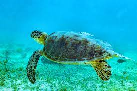
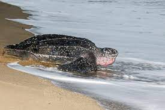
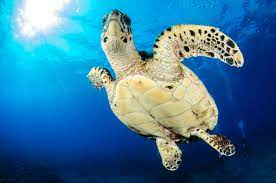
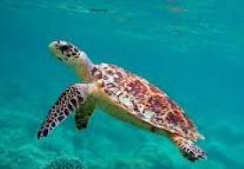
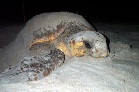

If you wish to join with us you can follow us


Presented by Nature Travelers
Nature Travelers
Among the 250 species of turtleon the Earth,seven of them live in the Ocean(called sea turtles),and 243
species live on land (terrestrial turtles called tortoises) or freshwater ponds and marshes.Five of the
seven species
of the sea turtles the green turtles,Hawksbill turtles,Olive Ridley,Loggerhead and leatherback visit the
SriLankan
shores to nest.Three species of freshwater turtles-Parker's Black turtle,sriLankan Black
Turtle and the
Soft
or Flapshell
Turtles and one terrestrial tortoise,the Star tortoise,can also be found in Srilanka.
| Turtle Categories | |||
|---|---|---|---|
| Turtle Name | Image | Description | Common Region |
| Green Turtle |  |
The Green Turtle is the most commonly found turtle in Sri Lanka. They are also found in
the
Indian, Pacific and Atlantic Oceans. Luckily this practice is less common today. |
The Green Turtles are the largest hard shelled sea turtles.Their regions are atlantic,Pasific,and Indian ocean. |
| Leatherback Turtle |  |
This critically endangered turtle is the largest of the 5 species and is a rare find in Sri Lanka. It remains on the brink of extinction. It is easily identifiable due to its long front flippers and unique black and white stripy shell - its carapace is in fact a layer of thin, tough, rubbery skin peppered with thousands of bone plates giving it a leathery appearance. It is in fact the only sea turtle that lacks a hard shell! In addition, they have a unique blood circulatory system for a cold-blooded reptile which means they are able to keep their blood warm even in cold waters using metabolic heat from their muscle activity. The Leatherback reaches a maximum length of 3m and a weight of 750kg. Their unique flexible carapace and its seven ridges enable them to dive to depths of 1500m in search of their favourite food, the jellyfish! Around 5 Leatherback Turtles are known to nest at Kosgoda Beach each year. |
They live in every Ocean expect Arctic and Antarctic. |
| Oliver Ridley |  |
This turtle is endangered because the population depends on the security of a small number of beaches found in the Indian, Pacific and Atlantic Oceans. The smallest of the sea turtles and one of the two species of ridley turtle, the Olive Ridley reaches a maximum size of 65cm and weighs 35-45kg. It is named after its olive/rust coloured shell. Olive Ridley Turtles nest yearly, and many lay their eggs on Kosgoda Beach, depositing more than 150 at one time. They are omnivores, eating crustaceans, fish and some marine vegetation. |
The Olive Ridley turtles are the smallest and most abundant of all sea turtles found in the world, habiting warm waters ofthe Pacific Atlantic ane Indian Ocean. |
| Hawsbill Turtle |  |
The critically endangered Hawksbill Turtle is rarer than the Green Turtle. It is also much smaller, reaching a maximum length of 90cm and weighing 50-70kg. The Hawksbill gets its English name from its narrow head and bird-like beak, which is used to catch animals hiding in small crevices. It is a regular visitor to Sri Lanka and other tropical and subtropical waters. Although one of the smaller species of sea turtle, it is renowned for its beautiful shell, which is made up of 13 symmetrical pieces and is very colourful. |
Hawksbill help maintain the health of coral reefs.They live in Atlantic and Pacific. |
| Loggerhead Turtle |  |
Loggerhead turtles have large heads with powerful jaws. The top shell (carapace) is slightly heart-shaped and reddish-brown in adults and sub-adults, while the bottom shell (plastron) is generally a pale yellowish color.Loggerhead turtles, like all sea turtles, are marine reptiles and must come to the surface to breathe air. Adult female sea turtles return to land to lay their eggs in the sand—they are remarkable navigators and usually return to a beach in the general area where they hatched decades earlier. |
Loggerhead turtles are found worldwide primarily in subtropical and temperate regions of the Atlantic, Pacific, and Indian Oceans, and in the Mediterranean Sea. In the Atlantic, the loggerhead turtle's range extends from Newfoundland to Argentina. In the eastern Pacific, loggerheads have been reported from Alaska to Chile. |
| From Wikipedia @All right reserved | |||
If you wish to join with us you can follow us
Presented by Nature Travelers